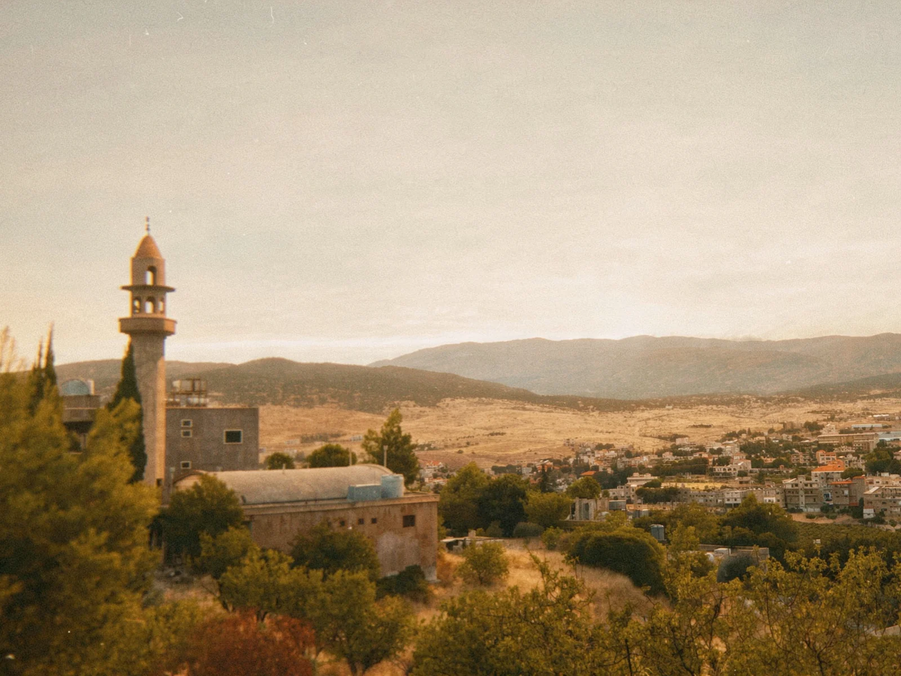

الإدارة
تسجّل الطلبات وتصدر الإفادات وتستقبل المواطنين.
من نحن، ماذا نفعل، وكيف نعمل.
بلدية شمسطار هي السلطة المحلية في البلدة. ويتّخذ المجلس البلدي المنتخب القرارات المتعلقة بالخدمات المحلية والأشغال العامة والبيئة والتنظيم المدني.
وشمسطار أيضًا مقرّ اتحاد البلديات المحلي، الذي يجمع القرى المحيطة حول مشاريع مشتركة.

تسجّل الطلبات وتصدر الإفادات وتستقبل المواطنين.
تستوفي الرسوم البلدية وتدير موازنة البلدية.
تدرس رخص البناء وتتابع المشاريع العامة.
جمع النفايات، الطرق، إزالة الثلوج والحدائق العامة.
تحفظ النظام وتنظّم السير وتطبّق القرارات البلدية.
تعمل مع المدارس والجمعيات والعائلات المحتاجة.
لأن شمسطار مركز للمنطقة، يقصدها أيضًا أهالي القرى المجاورة من أجل:
| اليوم | الساعات |
|---|---|
| من الاثنين إلى الخميس | – |
| الجمعة | – |
| السبت | – |
| الأحد والعطل الرسمية | مقفل |
قبل زيارتك: راجع صفحة الخدمات لمعرفة المستندات المطلوبة، لتُنجز معاملتك في زيارة واحدة.